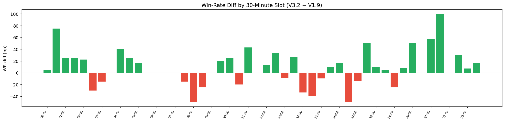
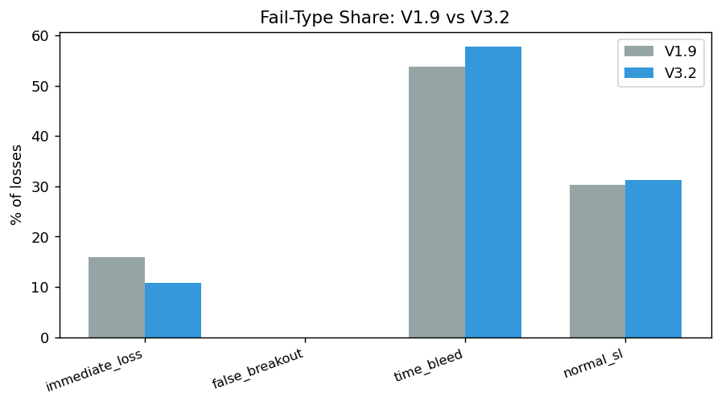
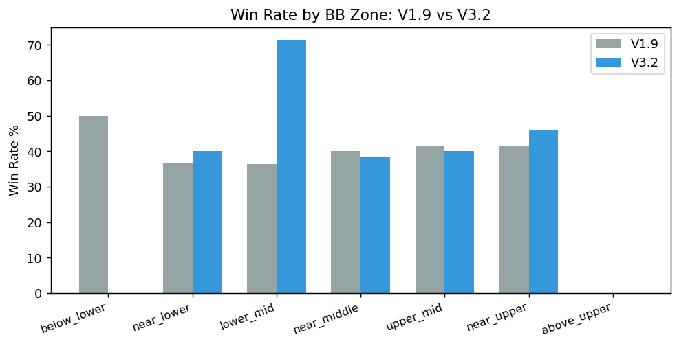
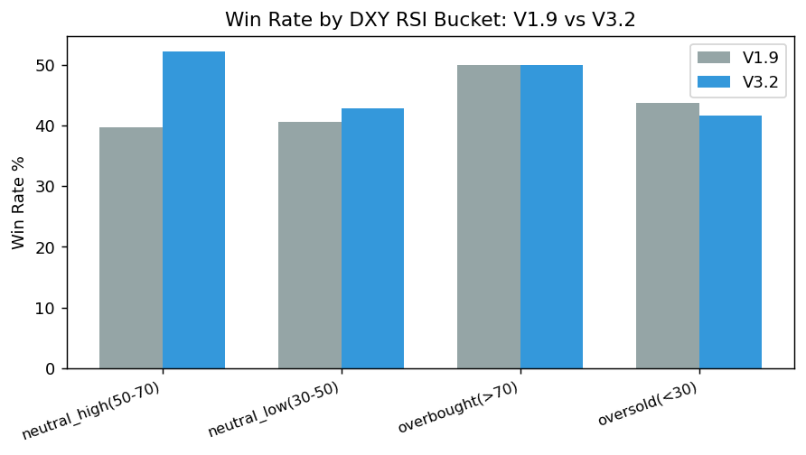
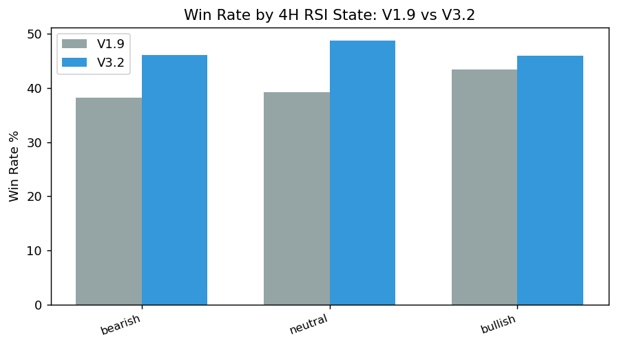

WR +6.06pp (47.13% vs 41.07%), PF +0.512 (2.047 vs 1.535), on 67 fewer trades — fewer, higher-quality signals.
V1.9 WR / PF
41.07% / 1.535
V3.2 WR / PF
47.13% / 2.047
WR diff (V3.2−V1.9)
+6.06pp
PF diff (V3.2−V1.9)
+0.512
S2-Hammer evolved from a Pullback-style V1.9 signal to a Hammer-candle-style V3.2 signal (see the .pine source files for exact rule differences); this is not a like-for-like backtest of one unchanged rule set across time. Deltas below may reflect rule changes, not only timing/regime differences.
Key findings
The 4H-bearish win-rate gap narrowed from 4.76pp (V1.9) to 1.47pp (V3.2) — the Hammer-candle entry is less exposed to counter-trend risk than the Pullback entry was.
time_bleed rose from 53.8% to 57.8% of losses — V3.2 did not fix the strategy's core failure mode (dragging losers), it just has fewer losses overall.
V1.9 n=224, V3.2 n=157. Most 30-minute-slot and subgroup cells are single-digit-to-teens for V3.2; S2 V3.2 OOS confidence is limited. Treat every delta here as descriptive.
V1.9 (Pullback) and V3.2 (Hammer-candle) are different signal implementations, not the same rule at two parameter settings — see the .pine source files for exact differences. Deltas may reflect the rule change, not a timing/regime effect.
Impact on practice
No active policy change. Research/publication only for this study.
Version Comparison





30-minute entry-slot comparison
Asia/Taipei bar-start time. Both versions computed with the same deterministic method; most cells are low-n for both versions and differences should be read as descriptive, not as a stable timing edge.
| 30m slot | V1.9 n | V1.9 WR | V1.9 PF | V3.2 n | V3.2 WR | V3.2 PF | WR diff (V3.2−V1.9) |
|---|---|---|---|---|---|---|---|
| 00:00 | 5 | 20.0% | 0.5 | 4 | 25.0% | 0.663 | +5.00pp |
| 00:30 | 4 | 25.0% | 0.667 | 2 | 100.0% | — | +75.00pp |
| 01:00 | 4 | 75.0% | 7.467 | 1 | 100.0% | — | +25.00pp |
| 01:30 | 4 | 25.0% | 0.666 | 2 | 50.0% | 3.98 | +25.00pp |
| 02:00 | 8 | 37.5% | 1.863 | 5 | 60.0% | 4.627 | +22.50pp |
| 02:30 | 5 | 80.0% | 8.031 | 4 | 50.0% | 1.996 | -30.00pp |
| 03:00 | 5 | 40.0% | 1.262 | 4 | 25.0% | 0.636 | -15.00pp |
| 03:30 | 2 | 100.0% | — | 0 | — | — | — |
| 04:00 | 5 | 60.0% | 3.124 | 2 | 100.0% | — | +40.00pp |
| 04:30 | 4 | 75.0% | 6.059 | 2 | 100.0% | — | +25.00pp |
| 05:00 | 2 | 50.0% | 1.997 | 3 | 66.67% | 3.966 | +16.67pp |
| 05:30 | 1 | 0.0% | 0.0 | 0 | — | — | — |
| 06:00 | 5 | 40.0% | 1.349 | 0 | — | — | — |
| 06:30 | 3 | 0.0% | 0.0 | 1 | 0.0% | 0.0 | +0.00pp |
| 07:00 | 3 | 0.0% | 0.0 | 1 | 0.0% | 0.0 | +0.00pp |
| 07:30 | 4 | 75.0% | 7.95 | 5 | 60.0% | 4.021 | -15.00pp |
| 08:00 | 4 | 50.0% | 1.977 | 2 | 0.0% | 0.0 | -50.00pp |
| 08:30 | 10 | 50.0% | 1.992 | 8 | 25.0% | 0.662 | -25.00pp |
| 09:00 | 4 | 0.0% | 0.0 | 2 | 0.0% | 0.0 | +0.00pp |
| 09:30 | 5 | 80.0% | 9.144 | 1 | 100.0% | — | +20.00pp |
| 10:00 | 3 | 0.0% | 0.0 | 4 | 25.0% | 1.036 | +25.00pp |
| 10:30 | 5 | 40.0% | 0.87 | 5 | 20.0% | 0.498 | -20.00pp |
| 11:00 | 7 | 57.14% | 3.19 | 4 | 100.0% | — | +42.86pp |
| 11:30 | 2 | 0.0% | 0.0 | 1 | 0.0% | 0.0 | +0.00pp |
| 12:00 | 5 | 20.0% | 0.503 | 3 | 33.33% | 1.005 | +13.33pp |
| 12:30 | 4 | 0.0% | 0.0 | 3 | 33.33% | 1.018 | +33.33pp |
| 13:00 | 3 | 33.33% | 1.036 | 4 | 25.0% | 0.682 | -8.33pp |
| 13:30 | 8 | 12.5% | 0.278 | 5 | 40.0% | 1.306 | +27.50pp |
| 14:00 | 4 | 100.0% | — | 3 | 66.67% | 4.889 | -33.33pp |
| 14:30 | 5 | 40.0% | 1.354 | 2 | 0.0% | 0.0 | -40.00pp |
| 15:00 | 7 | 42.86% | 1.665 | 3 | 33.33% | 1.951 | -9.53pp |
| 15:30 | 5 | 40.0% | 1.356 | 4 | 50.0% | 2.042 | +10.00pp |
| 16:00 | 7 | 42.86% | 1.519 | 5 | 60.0% | 3.047 | +17.14pp |
| 16:30 | 2 | 50.0% | 2.01 | 1 | 0.0% | 0.0 | -50.00pp |
| 17:00 | 7 | 28.57% | 0.805 | 7 | 14.29% | 0.335 | -14.28pp |
| 17:30 | 2 | 50.0% | 1.993 | 1 | 100.0% | — | +50.00pp |
| 18:00 | 6 | 50.0% | 2.0 | 5 | 60.0% | 3.346 | +10.00pp |
| 18:30 | 6 | 66.67% | 4.587 | 7 | 71.43% | 5.016 | +4.76pp |
| 19:00 | 4 | 25.0% | 0.662 | 1 | 0.0% | 0.0 | -25.00pp |
| 19:30 | 6 | 66.67% | 6.288 | 4 | 75.0% | 10.148 | +8.33pp |
| 20:00 | 2 | 0.0% | 0.0 | 2 | 50.0% | 1.99 | +50.00pp |
| 20:30 | 4 | 0.0% | 0.0 | 3 | 0.0% | 0.0 | +0.00pp |
| 21:00 | 3 | 0.0% | 0.0 | 7 | 57.14% | 2.718 | +57.14pp |
| 21:30 | 1 | 0.0% | 0.0 | 1 | 100.0% | — | +100.00pp |
| 22:00 | 7 | 42.86% | 1.491 | 7 | 42.86% | 1.497 | +0.00pp |
| 22:30 | 9 | 44.44% | 2.008 | 4 | 75.0% | 8.023 | +30.56pp |
| 23:00 | 6 | 50.0% | 2.151 | 7 | 57.14% | 2.268 | +7.14pp |
| 23:30 | 7 | 42.86% | 1.509 | 5 | 60.0% | 3.041 | +17.14pp |
Fail-Type Share
| fail_type | V1.9 | V3.2 | diff |
|---|---|---|---|
| immediate_loss | 15.9% | 10.8% | -5.1pp |
| false_breakout | 0% | 0% | +0.0pp |
| time_bleed | 53.8% | 57.8% | +4.0pp |
| normal_sl | 30.3% | 31.3% | +1.0pp |
Method and evidence boundary
S2 evolved from a Pullback-style V1.9 signal to a Hammer-candle-style V3.2 signal (different entry rule, not only a parameter tweak), so deltas are expected and must not be read as a like-for-like backtest of the same rules across time.
reads RS-XAUUSD-20260727-006 and RS-XAUUSD-20260727-007 results.json; recomputes no fail-pattern classification
Raw CSV and private decision conversations remain in trading-private. This public page contains reviewed aggregate results, charts, and the reproducible method only.